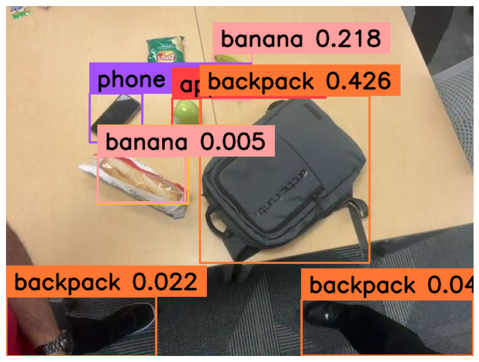
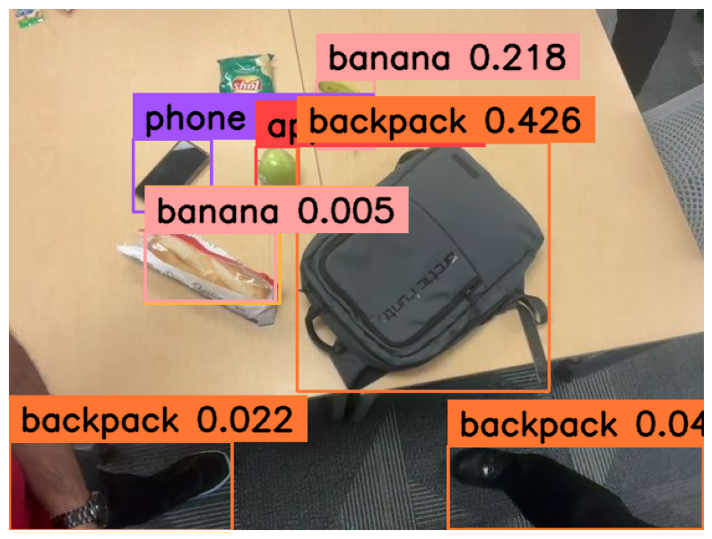

My Experience as a Student Researcher at Cornell University
A glimpse into my time as a SoNIC participant at Cornell
University
It was very motivating and also deadly! (deadly for
me)

May 2, 2024 • 4 min read

People in picture (left to right) : Alok Jha Tor Qureshi Paul Santana Ribesh Joshi
So.. who am I?
Hello! I'm Alok Jha, a junior Computer Science student at The University of Texas at Arlington. I have a passion for computer vision and artificial intelligence, and I aspire to make significant contributions to these fields. My journey in tech has led me to various exciting opportunities, the most recent being my participation in the SoNIC program at Cornell University. Find my resume here
What is the SoNIC Program at Cornell University?
The SoNIC (Software-defined Networked Systems Infrastructure) program at Cornell University is an intensive research experience designed for students interested in networked systems and computer science. This program offers participants the chance to work closely with esteemed faculty and gain hands-on experience in cutting-edge research projects.
My Experience
Oh man, where do I start.

The Beginning
Dallas, Texas
June 23, 2024
My journey at Cornell University kicked off with a toasty
welcome, reminiscent of the Texas heat. I was pretty excited, as
it had been a whole year since I last flew out of state.
My flight took off at the crack of dawn—7 AM—and I touched down
in Ithaca, NY at 2:50 PM. After a mad dash through the airport,
I raced to Phillips Hall for orientation, hoping I didn't look
as frazzled as I felt!

People in picture (left to right) : Morgan Cobb Daniel Rivera Tor Qureshi Paul Santana Alok Jha
Day 2
We were introduced to Dr. Bharath Hariharan, an Assistant Professor at Cornell University. He enlightened us about computer vision, the LLAVA model, and GEMINI. He also tasked us with benchmarking the LLMs for visual Q/A to identify the constraints of these cutting-edge models. That was pretty much it for the academic portion of the day.
But the fun part was still ahead. In the evening, we headed to Beebe Lake for some canoeing. We were the first ones to get on the boat, and it was impressively stable—until we hit a waterfall, and our boat flipped. I didn't know how to swim, but thankfully, I had my life jacket on. As I found myself underwater, Dr. Lee Ann Roberts's words from orientation echoed in my mind: "A boat flipped, I don't know what happened to them, but they were okay... I think."
I was eventually rescued, but getting back into the boat proved impossible due to my long legs. I had to guide myself while clinging to a boat, making my way to shallower water. Ewww... the bacterial water.


Day 3
Day 3 was all about diving deeper into the limitations of
state-of-the-art LLMs. We identified several key issues: text
recognition, cluttered scenes, racial bias, counting, image quality,
hallucination, reflections, and fine-grained classification. Our
cohort was divided into groups to address these problems and
fine-tune the models. My team took on the challenge of improving
object detection.
We approached this task with determination and creativity, pushing
the boundaries of current technologies. We explored innovative
methods and applied our skills to enhance the models' performance.
It was intense and intellectually stimulating work, but the results
were rewarding as we saw significant improvements.
After a day of rigorous research, we headed out for some physical
activity at the Hoffman Challenge Course. This experience was
nothing short of amazing. The course was a series of adventurous and
challenging obstacles that tested our teamwork and resilience. It
was exhilarating to conquer each obstacle, and I must say, our team
nailed it. The thrill of overcoming the challenges boosted our
spirits and fostered a sense of camaraderie among us.

Day 4
On Day 4, we had a quieter schedule with more time spent working
remotely. However, we had a special visit planned to the Lab of
Ornithology located within the serene Sapsucker Woods Sanctuary.
This sanctuary is renowned for its rich biodiversity and serves as a
hub for bird research and conservation efforts.
During our visit, we
had the opportunity to explore the Lab of Ornithology's facilities
and engage in bird watching using tools like binoculars. One
highlight was using the Merlin Bird ID app, which allowed us to
identify various bird species based on their features and learn
about their natural habitats and behaviors.
It was a delightful
experience connecting with nature and witnessing firsthand the
intersection of technology and ecological studies at such a
prestigious location.


Day 5
Day 5 was dedicated to intensive coding and project work. From morning until afternoon, we focused our efforts on refining and enhancing our code, utilizing every available moment to make significant progress on our projects. It was a productive session, with everyone fully immersed in their tasks and collaborating closely to achieve our goals.
In the evening, we were treated to a well-deserved break with a sunset cruise on Cayuga Lake. As we sailed along, the tranquil waters provided a stunning backdrop for the setting sun. The cruise offered breathtaking views of the surrounding landscapes and a relaxing atmosphere that allowed us to unwind after a day of coding. It was a memorable experience, bringing a perfect end to a day filled with hard work and achievement.


Day 6
On Day 6, we had our final presentations, but the real story began the night before. Our team, fueled by determination and countless cups of coffee, made the bold decision to pull an all-nighter. As the campus grew quiet, our workspace buzzed with activity.
Our team tackled an ambitious computer vision project, working through the night to prepare for our final presentation. We started by capturing images using a custom function, setting the stage for our analysis. Next, we set up advanced models like CogAgent and CogVLM, leveraging their power to detect and list objects in our images.
To enhance our results, we implemented a sophisticated image preprocessing pipeline, including denoising, sharpening, and contrast enhancement techniques. We then employed YOLO (You Only Look Once), a state-of-the-art object detection system, to identify and locate objects with impressive accuracy. Our team didn't stop at static images; we extended our work to video analysis, processing frames and annotating detected objects in real-time.
Throughout the project, we utilized Agile methodology, allowing us to adapt quickly to challenges and iterate on our solutions. We integrated various technologies, from basic image processing to advanced AI models, showcasing our versatility and technical prowess. In the end, our hard work paid off as we emerged victorious in the final presentation. This experience not only demonstrated our technical skills but also highlighted the power of teamwork and perseverance in tackling complex AI challenges

 

Day 7
On day 7, as we prepared for our flight, we decided to unwind and enjoy some downtime before departing. We opted to watch "A Quiet Place Part III," a thrilling movie that provided the perfect escape before our journey. The film's suspenseful plot and gripping scenes captivated us, offering a welcome break and a chance to relax before heading back home. It was a fitting end to our time at Cornell University, blending excitement with a touch of entertainment before our departure.

Conclusion
My journey as a student researcher at Cornell University through the SoNIC program has been nothing short of transformative. From exploring the intricacies of cutting-edge LLMs to navigating thrilling adventures and forging lifelong connections, every moment has been a testament to growth and discovery.
The experience of working closely with esteemed faculty and talented peers has deepened my passion for computer vision and AI. It has equipped me with invaluable skills and insights that will shape my future endeavors in this field. The rigorous challenges we faced, from fine-tuning models to conquering obstacle courses, have strengthened my resilience and problem-solving abilities.
As I reflect on this journey, I am grateful for the opportunity to contribute to meaningful research and push the boundaries of technology. Cornell University's commitment to innovation and academic excellence has inspired me to continue pursuing my aspirations with dedication and enthusiasm.
I look forward to applying the knowledge and experiences gained here as I embark on new adventures in my academic and professional journey. This journey at Cornell has been a chapter of growth, learning, and unforgettable memories that will undoubtedly shape my future endeavors.